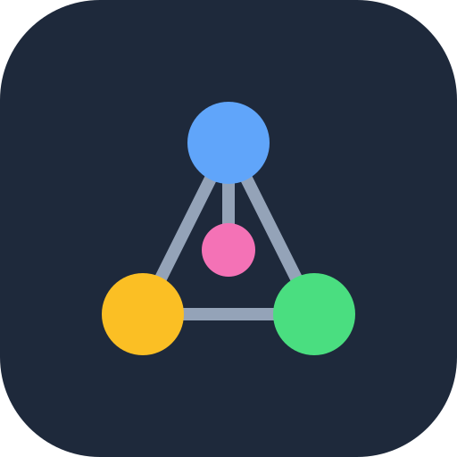

Knowledge-Verse
Connect this device
The app reads your notes from your private repository and writes your highlights back to it. It needs a GitHub token that can access only that repository. Make one token per device, so you can revoke one without the other.
- Open GitHub → new fine-grained token.
- Name it after this device; pick an expiration (one year is fine).
- Repository access: Only select repositories →
Knowledge-Verse(never the materials repo). - Permissions → Repository → Contents: Read and write. Nothing else.
- Generate, copy, paste below.
Repository (change only if it moved)
The token stays in this browser on this device. Anyone who can use this browser profile can use it, so keep the device locked.
Settings
Removing keeps your highlights in this browser (and on GitHub once synced); it deletes only the downloaded notes and the token.